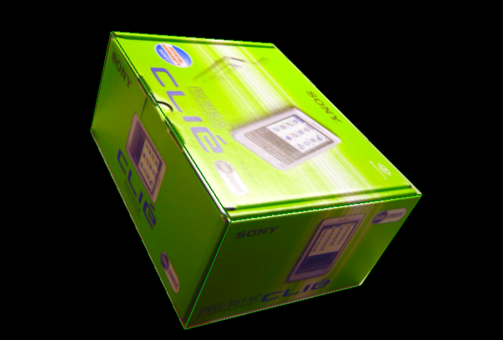

Single View Metrology
Introduction
This Project is about building a 3D model from a 2D image. The input image is required to be 3-point perspective. The basic algorithm follows the Single View Metrology paper by Criminisi. The UI creation and implementations are done on Matlab, and the code can be found here.
Step 1: Finding Vanishing Points
 Parallel lines in the real world will get intersect at the image plane, and we can find where they intersect in x, y, z directions by manually marking parallel lines in these three directions. It will be more accurate if marking more than three parallel lines in one direction, the method for calculating the vanishing points I used is Bob collins' algorithm, which is more accurate than using least square algorithm.
Parallel lines in the real world will get intersect at the image plane, and we can find where they intersect in x, y, z directions by manually marking parallel lines in these three directions. It will be more accurate if marking more than three parallel lines in one direction, the method for calculating the vanishing points I used is Bob collins' algorithm, which is more accurate than using least square algorithm.
Step 2: Calculate projection matrix
We know that the first three columns equals to projection matrix up to a scale, and the forth column is the world origin in the image coordinate. To get the scaling factors, I marked the origin, and three points on the x, y, z axis correspondingly, together with their distance towards the origin.
The scaling factor calculation is shown here:
|
By this, we get each element of P = [aVx bVy cVz O].
Step 3: Use homography matrix to get texture map
|
The homography matrix Hxy is the 1,2,4 columns of the projection matrix; similarly, Hxz is the 1,3,4 columns, and Hyz is the 2,3,4 columns. Use these three matrices to perform perspective transformation of the input image, and crop the wanted area as texture maps.
Step 4: Mark interesting points
Once getting texture maps, what is left is the 3D coordinates of the interesting points during the construction of the 3D model. In my case, I chose the points on the same height (same z) at one time.
The world origin on the image, and reference z are chosen as the height-reference to find other heights. First, choose a base point on the z = 0 plane, mark as b (bottom), and then mark the interesting point at z = z0. z0 is calculated as follows:
After getting z0, I continue mark the interesting points on the same height. The homography matrix to calculate these points x and y is the planar perspective map Hz = [aVx bVy cz0Vz+O]:
|
Continue doing this exhaustively to get all interesting points (x1,y1,z0),..., (xn,yn,z0), ..., (xk,yk,zm).
Step 5: Generate 3D vrml models
To generate vrml models, I examined the structure of the models in the text editor, as following:
|
A "Shape{...}" corresponds to a textured patch. Thus during this "Build" phase, users are asked to select the interesting points of a patch in order, and select its texture which is generated in the step 3, as well as marking the texture coordinates in the same order of the selected interesting points. Once done, the program will structure them into correct format into a output txt file. Patches can be added one by one. Finally, change the output txt file extension into wrl, the vrml model is created. Softwares such as view3dscene is required to open the model.
| 
Reference
| {kind=link}
{kind=link}
{kind=link}
{kind=link}
{kind=link}
{kind=link}
{kind=link}
{kind=link}
{kind=link}
{kind=link}
{kind=link}
{kind=link}